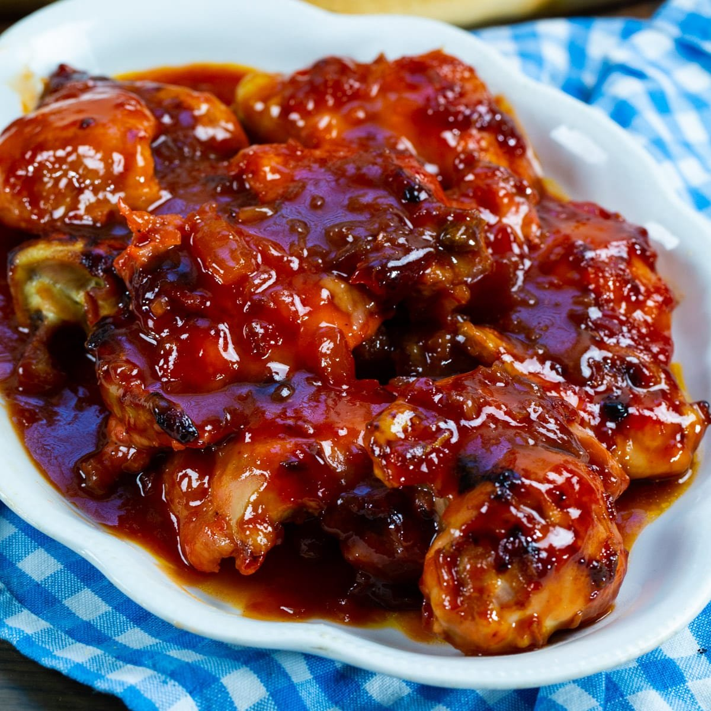

Apricot chicken

Description
Make this easy, flavorful apricot chicken in the oven, slow cooker, pressure cooker, or even on the grill. You just can’t go wrong with this recipe!
Ingredients
- 3 chicken breasts
- 1 cup apricot preserves
- 1 cup Catalina salad dressing (or Russian dressing)
- 2 tablespoons Dijon mustard
- 2 ounces dried onion soup mix
Steps
- Mise en place
- Preheat oven to 375 degrees.
- Cut chicken breasts in half or into serving-sized portions.
- In a medium-sized bowl, combine apricot preserves, Catalina dressing, onion soup mix, and Dijon mustard. Mix well.
- Place chicken in a greased 9x13 baking dish. Pour apricot mixture evenly over chicken and bake 40-45 minutes or until chicken is cooked through.
- Serve with greens.
Return to index page